This talk is called Responsive Images by this guy @CaseyLeask Structuring Sass for reuse and composability 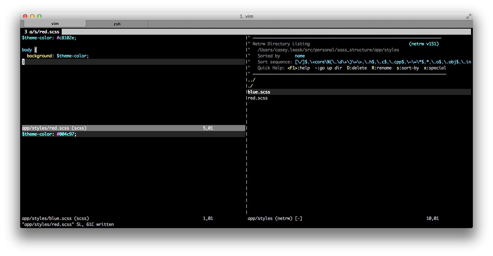 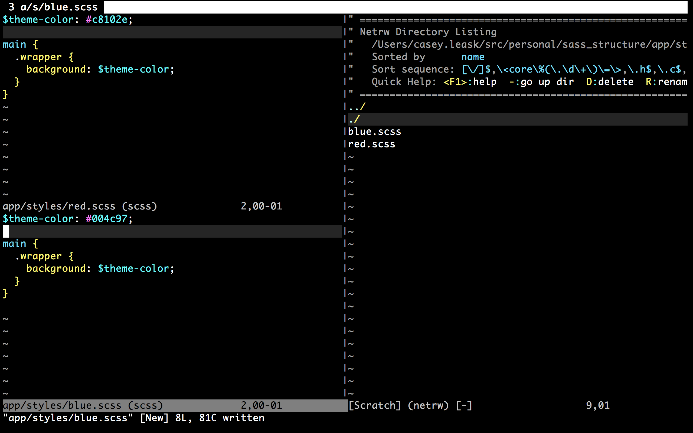 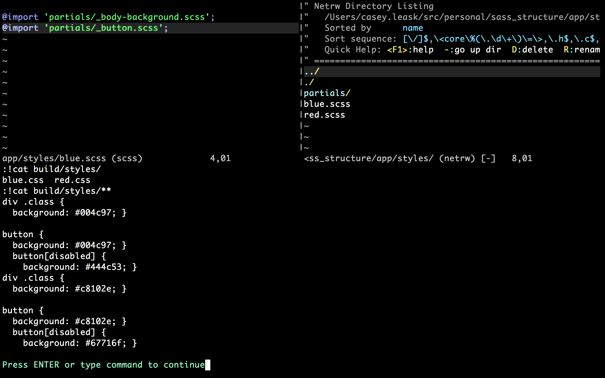 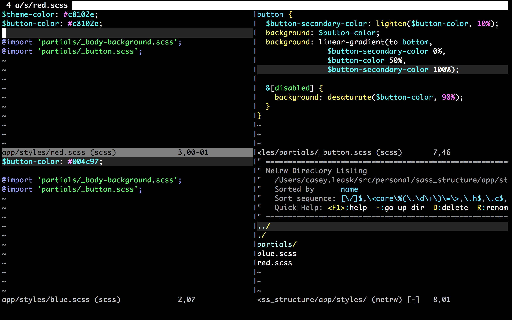 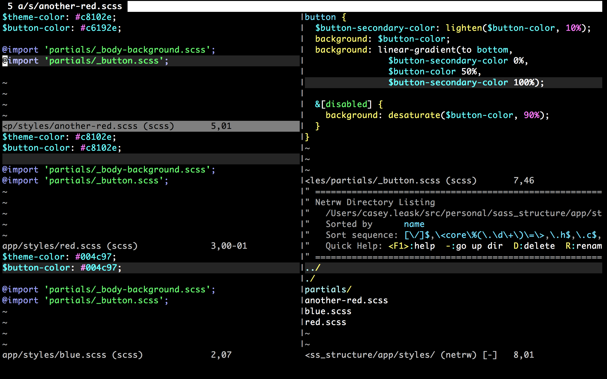 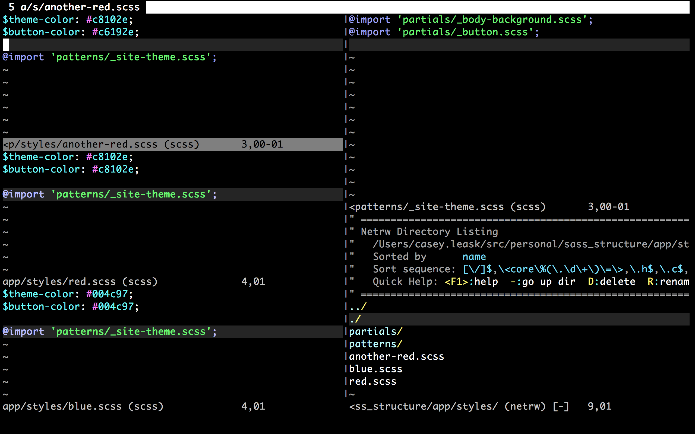 To recap: Sass File -> Patterns -> Partials Red -> Site Theme -> [Body Background, Buttons] 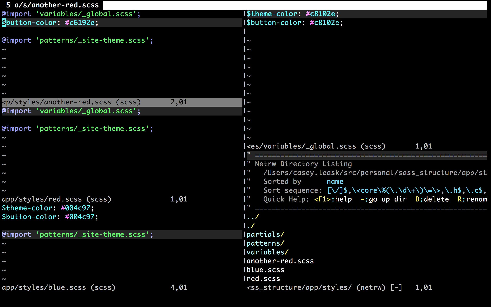 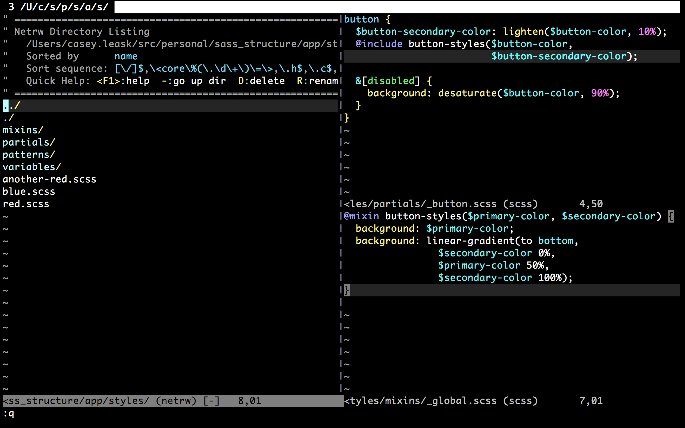 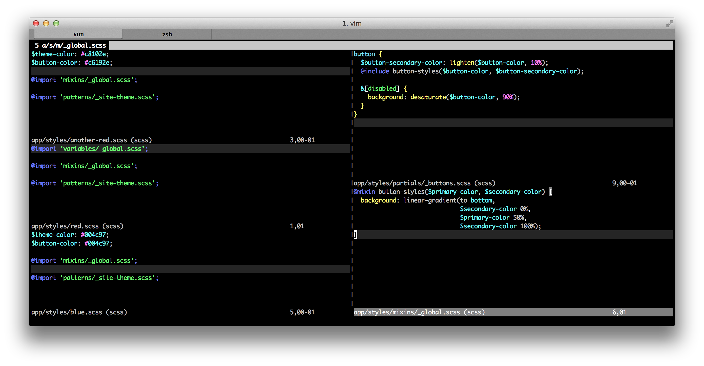 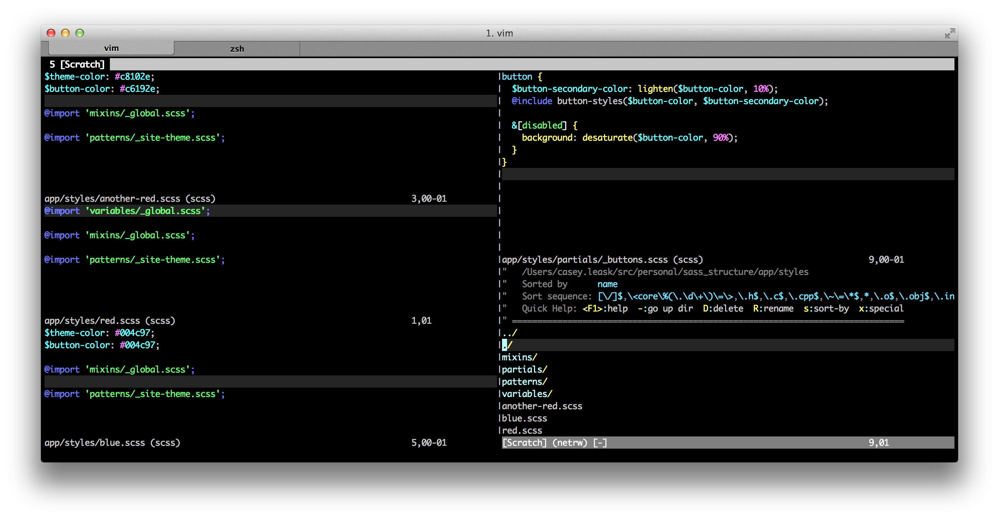 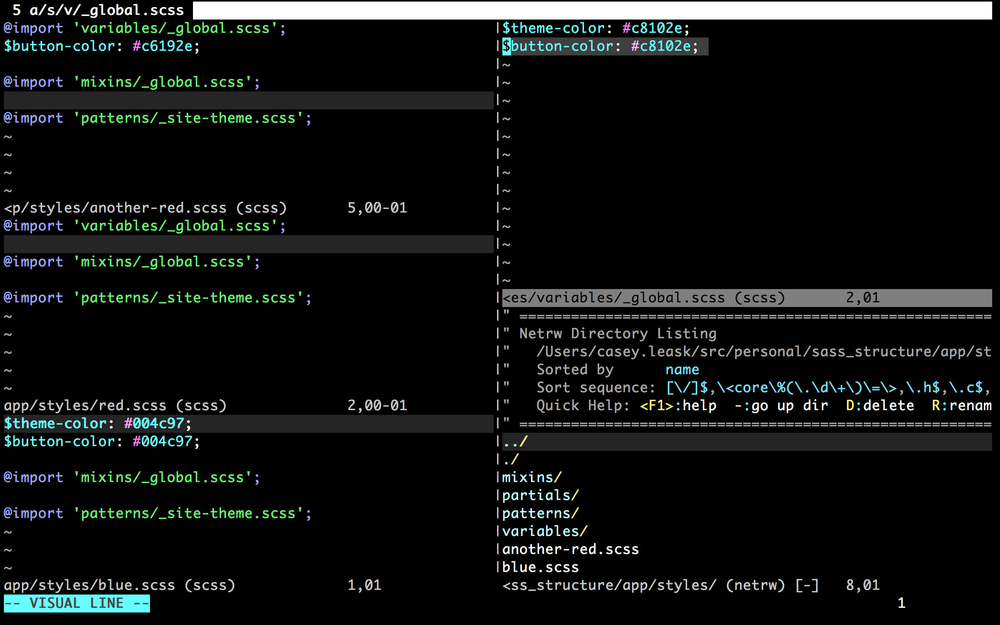 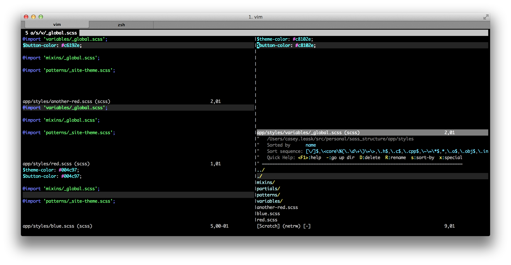 What happens now? 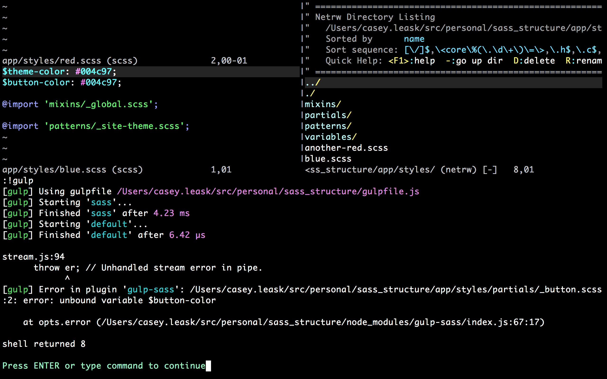 Sass File -> [Variables, Mixins, Patterns -> *Partials] Thanks! @CaseyLeask